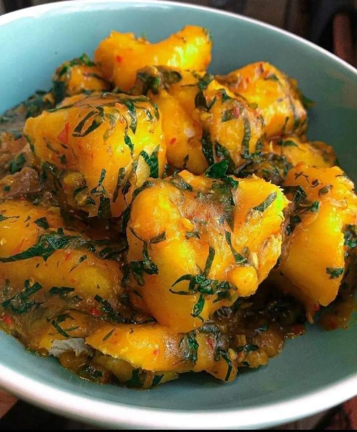

Poridge

Your Favourite Poridge Recipe
Poridge made with finest of ingredients harvested by
the best workmen and the most sophisticated of working equipments.
Even better is the painstainking method of careful
preparations
every ingredient is timed, properly washed, blended, marshed
and every other prepation practices.
- yam
- oil
- salt
- seasoning
- water
- fish
- meat
Steps to making Poridge
- Peel the yam properly
- Place enough quantity of water in the pot to boil
- Add the yam and add the red oil
- Allow to boil for 10minutes
- Add salts and seasonings
- Allow to boil and then add the fish and meat
Turkey
Spatchcocked-Butter-Roasted